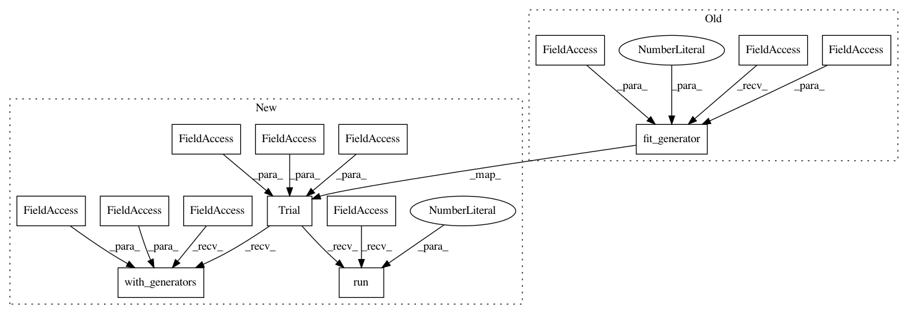

a894f84b099fb2ab1dee9ebce09361112f2539c2,docs/_static/examples/visdom_note.py,,,#,52
Before Change
import torchbearer.callbacks.tensor_board as tensorboard
tensorboard.VisdomParams.ENV = "Test"
torchbearer_model.fit_generator(traingen, epochs=5, validation_generator=valgen,
callbacks=[TensorBoard(visdom=True, write_graph=False, write_batch_metrics=True, batch_step_size=10, write_epoch_metrics=False)])
After Change
import torchbearer.callbacks.tensor_board as tensorboard
tensorboard.VisdomParams.ENV = "Test"
torchbearer_trial = Trial(model, optimizer, loss, metrics=["acc", "loss"], callbacks=[TensorBoard(visdom=True, write_graph=False, write_batch_metrics=True, batch_step_size=10, write_epoch_metrics=False)]).to("cuda")
torchbearer_trial.with_generators(train_generator=traingen, val_generator=valgen)
torchbearer_trial.run(epochs=5)
In pattern: SUPERPATTERN
Frequency: 3
Non-data size: 14
Instances
Project Name: ecs-vlc/torchbearer
Commit Name: a894f84b099fb2ab1dee9ebce09361112f2539c2
Time: 2018-08-20
Author: mp2u16@ecs.soton.ac.uk
File Name: docs/_static/examples/visdom_note.py
Class Name:
Method Name:
Project Name: ecs-vlc/torchbearer
Commit Name: a894f84b099fb2ab1dee9ebce09361112f2539c2
Time: 2018-08-20
Author: mp2u16@ecs.soton.ac.uk
File Name: docs/_static/examples/tensorboard.py
Class Name:
Method Name:
Project Name: ecs-vlc/torchbearer
Commit Name: a894f84b099fb2ab1dee9ebce09361112f2539c2
Time: 2018-08-20
Author: mp2u16@ecs.soton.ac.uk
File Name: docs/_static/examples/vae.py
Class Name:
Method Name: